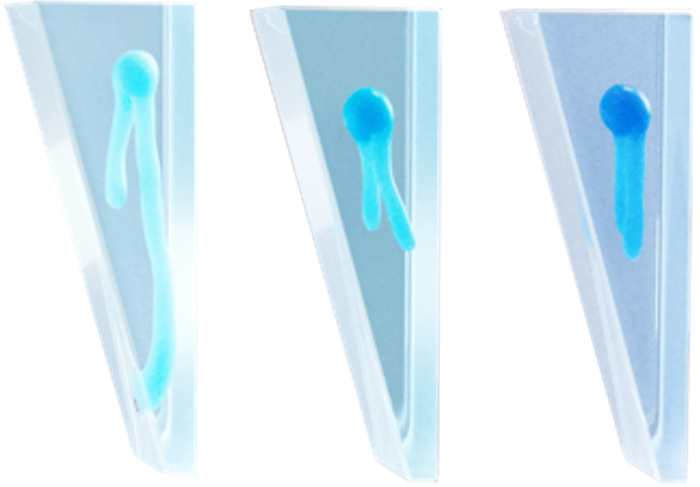

 3 ВАЖЛИВИХ КЕРАМІДИ ЗАСОБИ CERAVE МІСТЯТЬ ТРИ КЕРАМІДИ, ІДЕНТИЧНІ ВЛАСНИМ КЕРАМІДАМ ШКІРИ ЛЮДИНИ EOP, NP ТА AP, ЯКІ Є ВАЖЛИВИМИ СКЛАДОВИМИ, ЩО СТАНОВЛЯТЬ ОСНОВНУ ЧАСТИНУ ЛІПІДНОГО МАТРИКСУ РОГОВОГО ШАРУ ШКІРИ 5/13